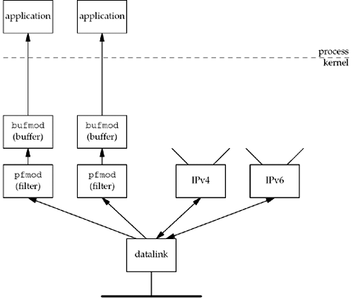

| [ Team LiB ] |
|
29.3 Datalink Provider Interface (DLPI)SVR4 provides datalink access through DLPI. DLPI is a protocol-independent interface designed by AT&T that interfaces to the service provided by the datalink layer [Unix International 1991]. Access to DLPI is by sending and receiving STREAMS messages. There are two styles of DLPI. In one style, there is a single device to open, and the desired interface is specified using a DLPI DL_ATTACH_REQ request. In the other style, the application simply opens the device (e.g., le0). But for efficient operation, two additional STREAMS modules are normally pushed onto the stream: pfmod, which performs packet filtering within the kernel, and bufmod, which buffers the data destined for the application. We show this in Figure 29.2. Figure 29.2. Packet capture using DLPI, pfmod, and bufmod. Conceptually, this is similar to what we described in the previous section for BPF: pfmod supports filtering within the kernel using a pseudomachine and bufmod reduces the amount of data and number of system calls by supporting a snapshot length and a read timeout. One interesting difference, however, is the type of pseudomachine supported by the BPF and pfmod filters. The BPF filter is a directed acyclic control flow graph (CFG), while pfmod uses a Boolean expression tree. The former maps naturally into code for a register machine while the latter maps naturally into code for a stack machine [McCanne and Jacobson 1993]. This paper shows that the CFG implementation used by BPF is normally 3 to 20 times faster than the Boolean expression tree, depending on the complexity of the filter. Another difference is that BPF always makes the filtering decision before copying the packet, in order to not copy packets that the filter will discard. Depending on the DLPI implementation, the packet may be copied to give it to pfmod, which may then discard it. |
| [ Team LiB ] |
|